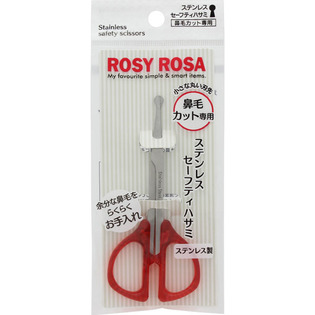
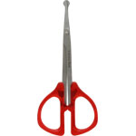

返回列表
产品名称：ロージーローザ ステンレスセーフティハサミ

シャンテイ ロージーローザ ステンレスセーフティハサミ ＿
メーカー シャンテイ
JANコード 4901604450535
商品の特徴
小さな丸い刃先
鼻毛カット専用
余分な鼻毛をらくらくお手入れ
丸い刃先で、柔らかい鼻の内部を傷つけずに鼻毛をらくらくカット
ステンレス製なのでサビに強く切れ味抜群！
成分・分量
【材質】
本体／ステンレススチール
ハンドル部／アクリル樹脂
用法及び用量
【使用方法】
１．周りの安全を確認し、手元に鏡を置き、安定した姿勢でお手入れを始めてください。
２．鼻の頭を押し上げ、鼻の内部が見えるようにします。
３．刃先を閉じたまま鼻の内部にそっと入れ、余分な鼻毛をカットします。